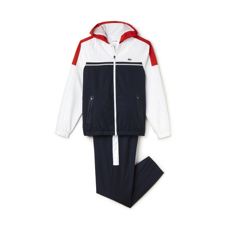
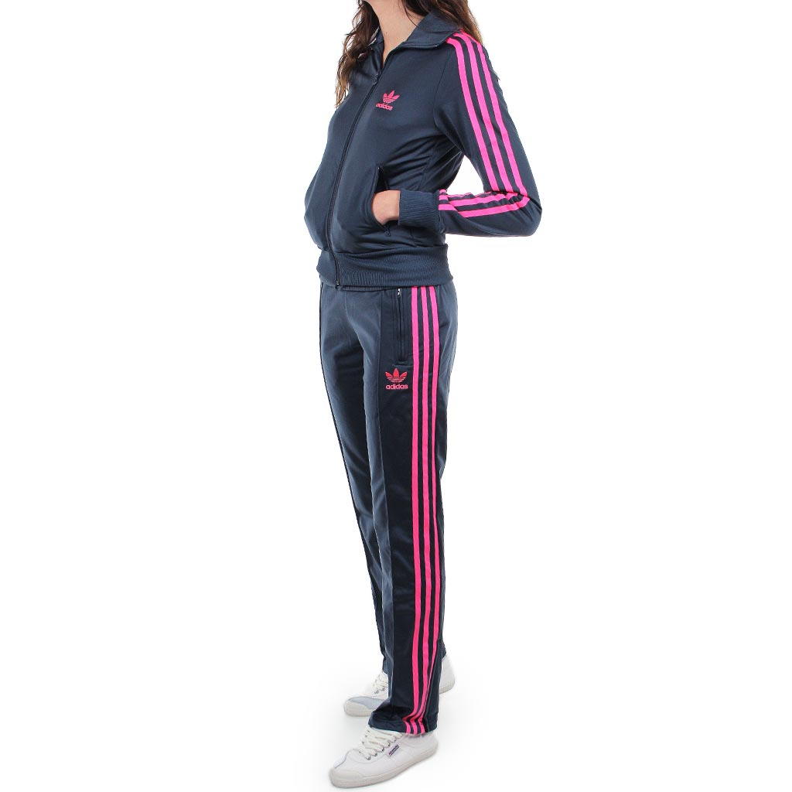
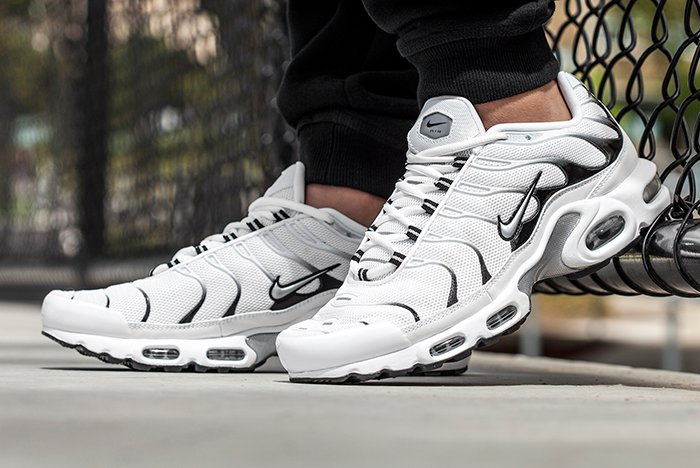
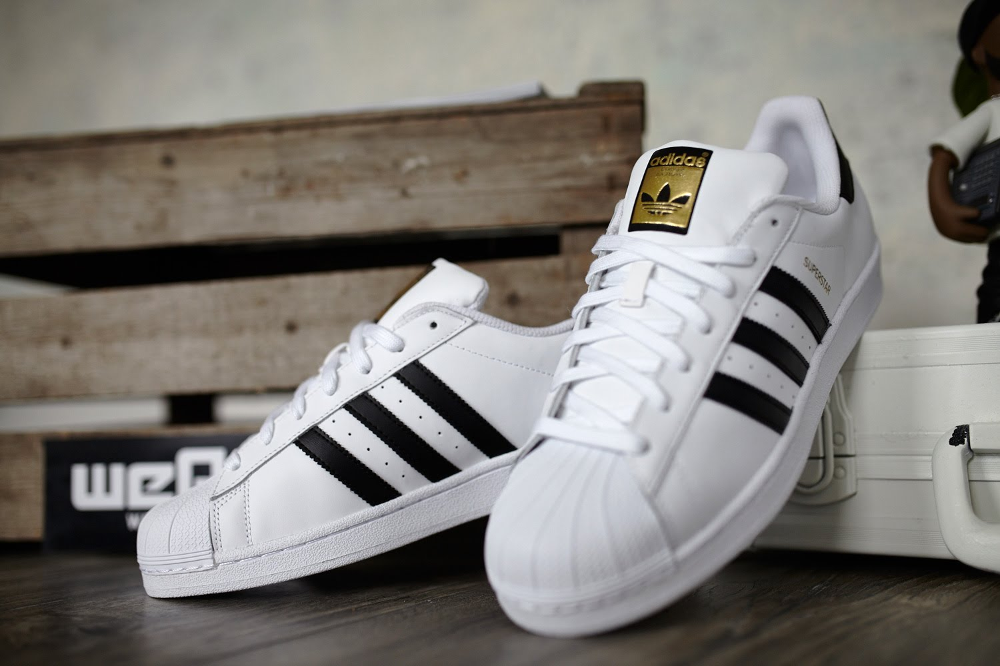
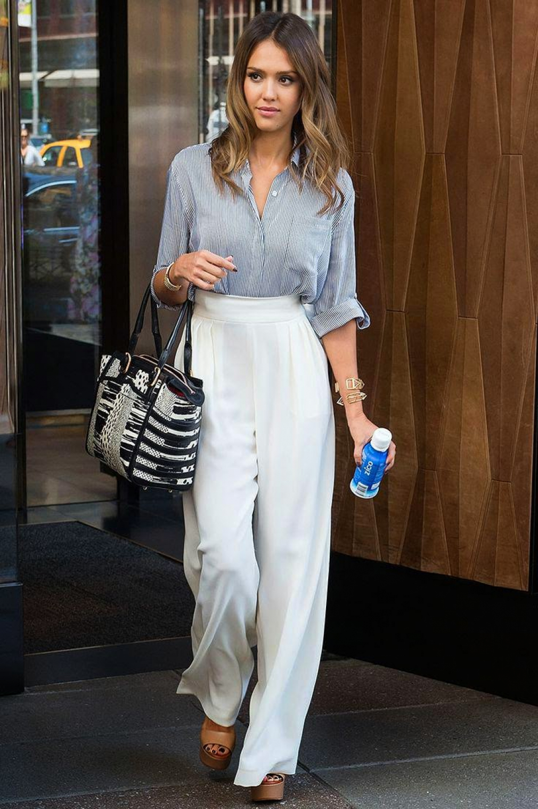
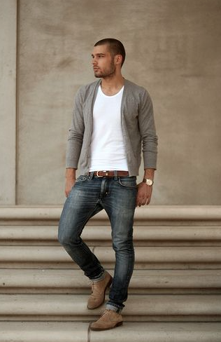

Maintenant je vais vous parlez en particulier la mode des jeunes de nos jours. Aujourd'hui en 2018 chez les jeunes on retrouve ces différents styles de mode:
Clique ici pour savoir plus de détails sur les différents styles vestimentaires.
Les jeunes s'inspirent souvent de leur model, le plus souvent des chanteurs. En effet si le style street wear est la tendance à nos jours
c'est parce que le rap devient populaire. Le rap est la catégorie de musique le plus écouté depuis 2015 par les jeunes. C'est pourquoi le style
street wear ,Rn'B ou urban domine.
Les publicités boutiques de la télévision intégre aussi ce style par expemple:
À présent je vais vous montrez la mode vestimentaire connue par les jeunes.
Les vêtements de marque les plus portés:


Les baskets les plus portés:


La première image présente des TN nike, puis la deuxième image montre des superstars.
Puis il y'a le style classique:


Cependant le style vestmentaire est révélateur de la classe social. Pour plus d'informations clique ici.
Enfin nous avons vue les différents mode vestimentaires, qui sont très variées. Et qui continue de se développer.